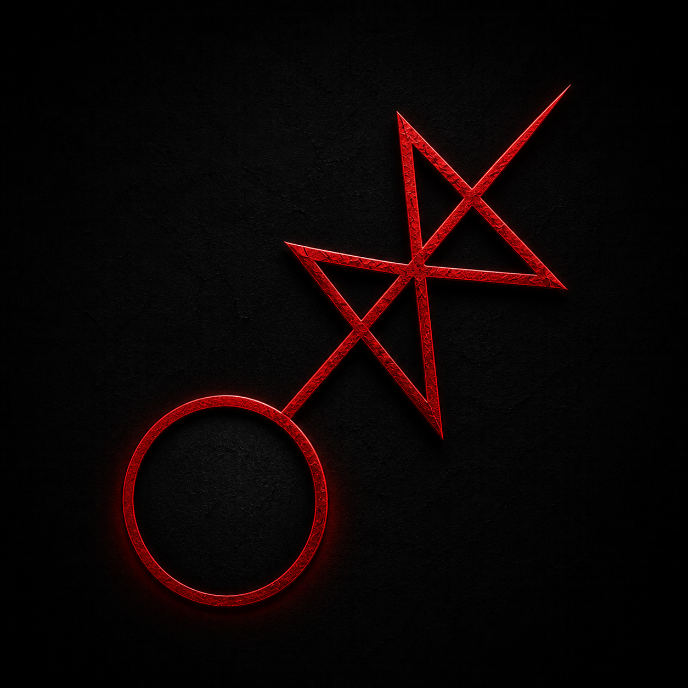

Polytheistic practice
REDisM is a polytheistic spiritual path with VOIDAR honoured as the head deity.
Established 13 July 2026
A personal spiritual path centred on darkness, awareness, choice, and consequence.
“Magick through Darkness.”

The mark of REDISM
The path
Realms ov Eternal Darkness (RED), also referred to as REDISM, is a personal spiritual path established by M-KOT on 13 July 2026.
REDisM explores spiritual meaning through darkness, reflection, personal discipline, and conscious choice. Darkness is approached as a symbol and a space for contemplation—not as an instruction to cause harm.
The path is polytheistic and recognises VOIDAR as its head deity. Its central affirmation is “Magick through Darkness.” Practitioners are encouraged to think carefully, take responsibility for their decisions, and respect the boundaries and wellbeing of others.
REDisM is a developing personal tradition. This website describes its current principles and practices rather than claiming to represent every spiritual path or tradition.
Head deity
The central divine name within the REDISM practice.
Within REDISM, VOIDAR is the sacred name used for Satan and is honoured as the head deity. This name and its meaning belong to the founder’s personal spiritual framework.
Devotion to VOIDAR is approached through contemplation, intention, personal responsibility, and ongoing study. This section presents the tradition’s own understanding without requiring visitors to share it.
Awareness · Intention · Consequence
“Magick through Darkness.”
Worldview
REDisM is a polytheistic spiritual path with VOIDAR honoured as the head deity.
Darkness can represent mystery, inward reflection, the unknown, and the space in which a person examines themselves.
Actions matter. Each person is responsible for considering the likely effects of their choices.
Practice is strengthened through consistency, self-awareness, study, and deliberate intention.
Foundation
Observe thoughts, feelings, circumstances, and patterns before deciding how to respond.
Know why you are taking an action and keep your goals clear, considered, and realistic.
Take responsibility for outcomes, learn from mistakes, and avoid shifting blame onto others.
Conduct
REDisM places emphasis on deliberate choices and personal responsibility.
Think through the likely effects of a decision and accept responsibility for your part in its outcome.
Do not turn every disagreement into an argument. Pause, communicate clearly, and disengage when that is wiser.
Respect other people’s consent, safety, property, and right to hold different beliefs.
REDisM rejects unnecessary animal killing and blood sacrifice. Spiritual practice should not require harming yourself or another person.
The founder’s stated rules include avoiding alcohol, hard drugs, and smoking, and approaching practice with a clear and deliberate mind.
Keep studying, review your choices honestly, and allow your understanding to develop with experience.
REDisM does not frame life as a simple contest between absolute labels of “good” and “evil.” It focuses on choices, context, responsibility, and consequences. This does not remove the need to respect safety, consent, and the wellbeing of others.
Reflection and routine
Choose a calm, safe place. Sit comfortably, breathe naturally, and observe your thoughts without forcing an image.
Use the idea of the “void” as a focus for stillness and self-examination. Visualization is optional; a word or awareness of breathing can be enough.
Use a journal or grimoire to organise ideas, reflections, symbols, and questions about your path.
A simple routine
Personal commitment
I walk my path with awareness and intention.
I take responsibility for my choices and their consequences.
I respect boundaries and reject needless harm.
I continue to study, reflect, and develop my understanding.
Magick through Darkness.
This is a personal statement of commitment for the REDISM website, not a legal or binding declaration.
Record of the path
A place to collect study notes, personal reflections, symbols, and the evolving ideas of REDISM.
A grimoire can contain dates, the meaning assigned to symbols, reflections after meditation, questions for further study, and changes in understanding over time.
Keep entries clear and honest. Mark what is a personal interpretation, what is a source you have read, and what remains an open question.
The affirmation
Awareness in thought. Intention in action. Responsibility for consequence.
Return to the beginning ↑Origin
Founder of Realms ov Eternal Darkness (RED), established on 13 July 2026.
This website shares the current identity, principles, and developing practices of REDISM. Its content may evolve as the founder continues to study and document the path.
For public enquiries, a dedicated public contact channel can be added when one is established.